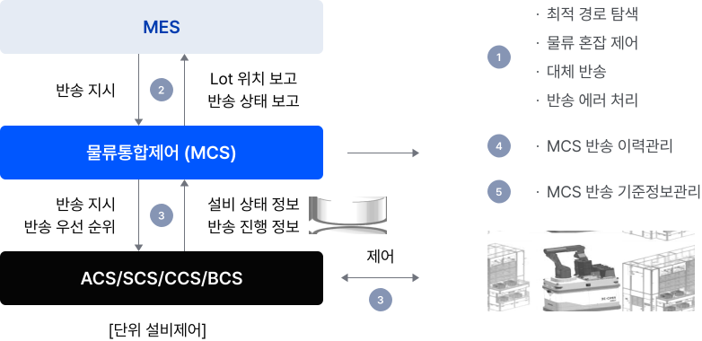
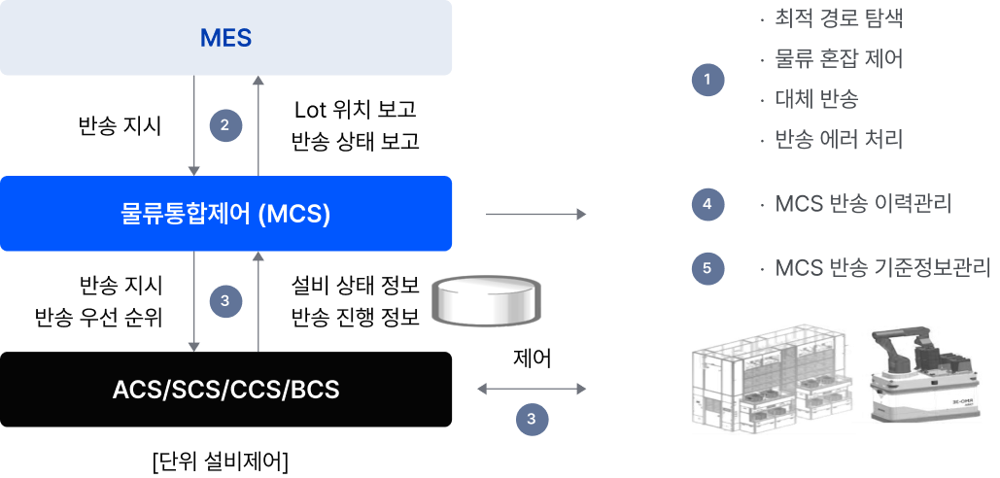
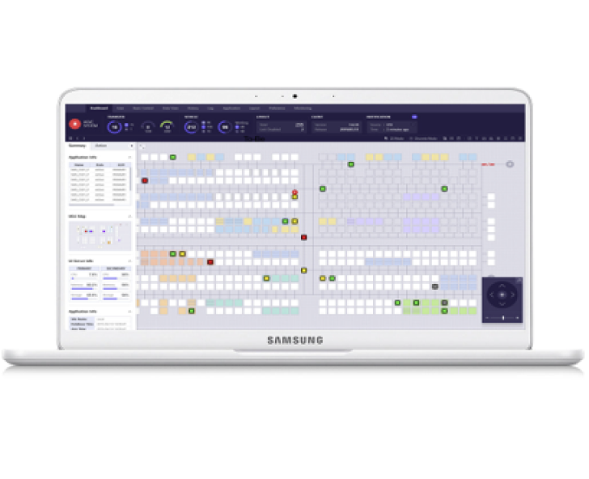
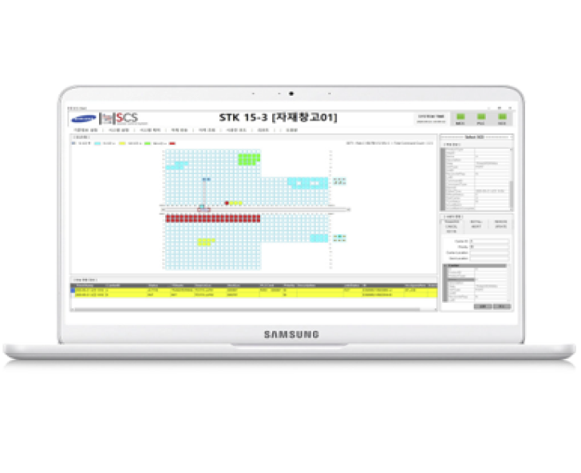
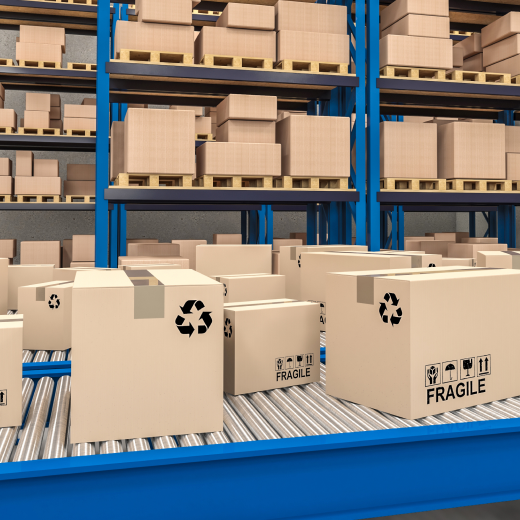
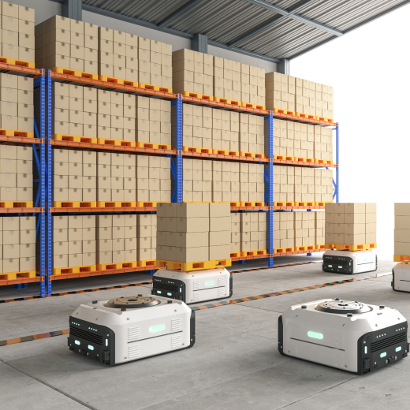
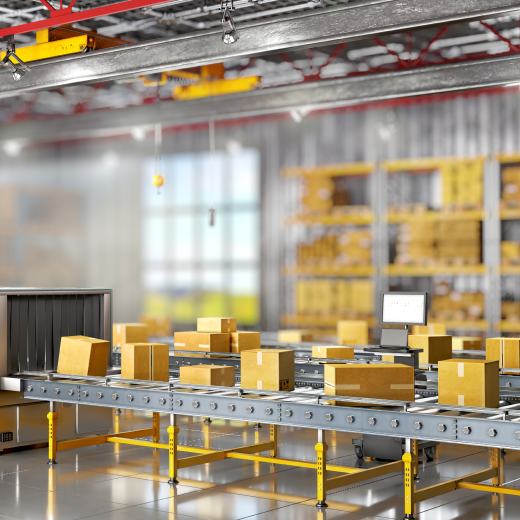
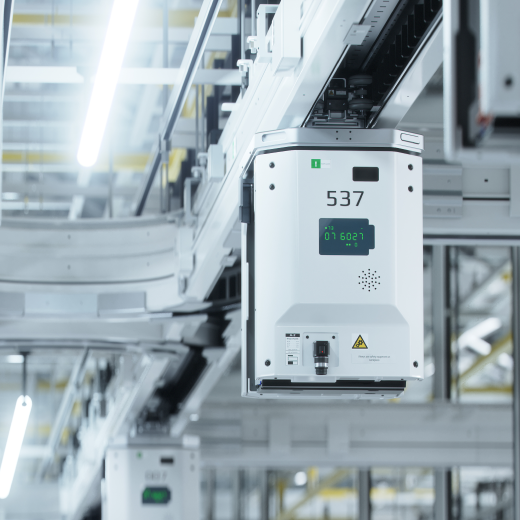

미라콤아이앤씨의 자동제어 솔루션은 물류설비 연동을 통한 반송 및 보관 제어로 운영 효율을 극대화 합니다.
*MCS는 삼성SDS 솔루션입니다.
물류제어 시스템 MCS : Material Control System
물류 설비에 대한 반송명령 관리를 통해 물류 이동시간을 최적화하는 물류제어 시스템입니다.

MES 물류통합제어(MCS) ACS/SCS/CCS/BCS [단위 설비제어] ① 최적 경로 탐색, 물류 혼잡 제어, 대체 반송, 반송 에러 처리 ② 반송 지시, Lot 위치 보고, 반송 상태 보고 ③ 반송 지시, 반송 우선 순위, 설비 상태 정보, 반송 진행 정보, 제어 ④ MCS 반송 이력관리 ⑤ MCS 반송 기준정보관리

MES 물류통합제어(MCS) ACS/SCS/CCS/BCS [단위 설비제어] ① 최적 경로 탐색, 물류 혼잡 제어, 대체 반송, 반송 에러 처리 ② 반송 지시, Lot 위치 보고, 반송 상태 보고 ③ 반송 지시, 반송 우선 순위, 설비 상태 정보, 반송 진행 정보, 제어 ④ MCS 반송 이력관리 ⑤ MCS 반송 기준정보관리
주요기능
number 1 물류 반송 제어: 최적경로탐색, 물류혼잡제어, 반송에러처리, 대체 반송 등
number 2 상위 Host (MES) 인터페이스
number 3 하위 물류설비 제어 (ACS, SCS, CCS, BCS)
number 4 물류 반송 이력관리 - 설비 이력, 반송 이력, Carrier 위치 이력
number 5 물류 반송 기준정보 관리
AGV 제어 시스템 ACS : AGV Control System
상위 시스템에서 수신한 운반 지시를 수행하기 위해 최적의 알고리즘 기반 최적 경로탐색 및 최단 AGV를 할당하고 운반 명령을 수행하는 시스템입니다.

주요기능
number 1 최적 알고리즘 기반 경로 탐색
number 2 최단 거리 AGV 선정 및 할당
number 3 AGV 충돌 방지 교차로 제어 기능 AGV
number 4 자동 충전 기능
number 5 근거리 AGV 할당 Job 이관 기능
기대효과
number 1 솔루션 기반 구축으로 Setup 시간 단축
number 2 최적 경로를 통해 운반 Lead Time 단축
number 3 AGV 가동률 극대화를 통한 투자비 절감
number 4 Non-down Patch/유지보수/운영 최적화 등
스토커 제어 시스템 SCS : Stocker Control System
보관창고 내 자재 관리 및 입/출고 제어를 위해 상위시스템과의 연동과 사용자 UI를 지원하며, 모니터링을 통해 Stocker를 제어하는 시스템입니다.

주요기능
number 1 최적 알고리즘 기반 자재 입출고 최적화
number 2 운반 목적지 및 우선 순위 변경 기능
number 3 Multi-Fork, Multi-Deep 타입 Crane 지원
number 4 설비 상태 실시간 모니터링
기대효과
number 1 상위시스템 연계 최적 물동량 처리
number 2 모듈화된 솔루션 기반 Setup 기간 단축
number 3 Server-Client 구조로 이중화/사용자 관리 용이
number 4 설비 표준 I/F 제공으로 운영/유지보수 용이
특장점
반도체, 전기, 이차전지 등 하이테크
Full Automation 제조 환경에서 검증된 솔루션
검증된 최적 알고리즘 적용으로 최적 경로선정 및
부하 분산관리 가능
표준 인터페이스 기반 다양한 물류 설비의 통합 제어 가능
서버 분산배치 및 메시지 큐를 활용한 분산환경으로
시스템 안정성과 확장성 보장
편리한 사용자 UI 를 지원하며 실시간 모니터링과 제어 가능
고객 혜택
최적의 경로 알고리즘 설계, 물류 반송의 실시간 위치 추적 및 실시간 물류흐름 제어로 물류 이동시간이 단축됩니다.
AGV, OHT, 스토커 등 물류 설비 가동률을 극대화하여 투자비를 절감할 수 있습니다.
다양한 도메인 구축 노하우에 기반한 솔루션으로 고객사의 제조/유통 환경에 맞게 최적화된 환경을 제공합니다.
구축 사례

글로벌 메모리 반도체 선두 기업인 고객사는 웨이퍼를 각 공정 제조 설비에 운반할 때 높은 수준의 청정도를 유지할 필요가 있었습니다. 이를 위해 OHT(Overhead Hoist Transport) 설비를 활용한 웨이퍼 물류 자동화 시스템을 구축 하였습니다. 생산 제품별로 거쳐야 하는 공정 순서에 맞게 스스로 움직이며 중앙 시스템 관제실에서는 OHT 경로와 시간, 움직임을 제어하여 모든 OHT 기기의 움직임을 한눈에 파악할 수 있도록 하였습니다. 반도체 제조라인의 물류 자동화 시스템으로 원활한 공정 흐름이 가능하도록 하여 반도체 품질 수준과 생산 효율을 높일 수 있었습니다.

글로벌 이차전지 기업인 고객사는 배터리 제조업 특성상 인력 의존도가 높아 수작업으로 진행하는 업무가 많았습니다. 이를 해소하고자 자율주행 무인운반차(AGV)를 사용하여 각기 다른 곳에서 진행되는 조립 공정, 노칭, 스태킹 등의 작업을 수월하게 할 수 있도록 개선하였습니다. 전기차 배터리 생산라인에 반자동화를 진행하여 생산성을 높일 수 있었고, 이를 통해 원가절감이 어려운 배터리 사업에서 수익성을 확보할 수 있었습니다.

종합 온라인몰 유통 기업인 고객사는 판매 경쟁력 강화를 위해 오프라인 6개 매장에 디지털풀필먼트센터(DFC)를 구축하였습니다. 고객이 주문한 제품의 피킹,분류,배송 과정을 자동화한 모델을 각 오프라인 매장에 적용하여, 고객에게 ‘당일배송’ 및 ‘싱싱배송’(근거리 2시간이내에 배송), 고객사 최초의 ‘드라이브-스루‘ 픽업 서비스도 운영하게 되었습니다. 미라콤의 물류자동화를 통해 고객은 작업속도가 빨라졌고, 오분류를 최소화하였으며 작업환경 개선 등 업무 효율화가 가능해졌습니다.

국내 산업용 파스너 제조 전문 기업인 고객사는 신규부지로의 제품 창고 이전이 계획되어 있었습니다. 제품의 특성상 중량물 비중이 높아 작업자의 피로도가 높고, 보관 효율이 낮았으며 Paper기반의 물류운영으로 효율성이 저하되는 이슈가 있었습니다. 또 신규 부지에는 한정된 공간에 현재 대비 약 2배의 보관량이 필요하였기에 고객사 운영에 최적화된 스태커크레인 자동창고를 제안/구축 하게 되었습니다. 이를 통해 면적 내 최대 보관량을 확보할 수 있었고, 신속한 입출고와 안전하고 유연한 물류 운영이 가능해졌습니다.